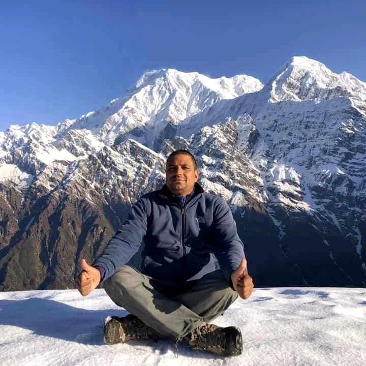

★★★★★
Safe, patient and deeply experienced
Shiva helps trekkers feel comfortable on the trail with steady pacing, clear advice and years of experience in the Annapurna, Everest and Langtang regions.
Trekker feedback
Private Himalayan Guide • 25+ Years Experience
Plan Everest, Annapurna, Mardi Himal, Poon Hill and custom Himalayan treks with Shiva Subedi — a trusted local guide with 25+ years of experience.
Years Experience
Happy Trekkers
Popular Routes
Private Guidance
Meet Your Guide
Shiva Hari Subedi, also known as Shiva Subedi, is a professional private trekking guide from Pokhara, Nepal. For over 25 years, he has helped travellers explore the Himalayas safely, personally and meaningfully.
Trekking with Shiva is not only about reaching a viewpoint or base camp. It is about travelling with a trusted local person who understands the trail, the culture, the villages, the weather and the right pace for your group.
Whether you are planning Everest Base Camp, Annapurna Base Camp, Mardi Himal, Poon Hill, Langtang or a custom Nepal trek, Shiva can help you choose a route that matches your time, fitness level and travel style.

✅ 25+ years Himalayan guiding experience
✅ Private trekking support
✅ Route planning help
✅ Local culture and village knowledge
✅ Friendly Nepali hospitality
Dream Routes
Iconic journey through Sherpa villages, suspension bridges and legendary Everest views.
The legendary Annapurna round trek with high mountain passes, classic villages and one of Nepal’s most rewarding long trekking journeys.
Forests, villages, mountain panoramas and the beautiful Annapurna sanctuary.
Perfect short trek with sunrise views over Annapurna and Dhaulagiri ranges.
A peaceful ridge trail with close views of Machhapuchhre and Annapurna Himalayas.
A quieter Annapurna route with ridge views, village culture and the option to extend toward sacred Khayer Lake.
A scenic cultural trek with mountain views, villages and peaceful Himalayan valleys.
Short scenic hikes around Pokhara for travellers with limited time.
A quieter Himalayan circuit with remote villages, dramatic valleys and high mountain scenery.
A beautiful cultural trek to sacred alpine lakes with mountain views and peaceful trails.
A unique journey through desert-like Himalayan landscapes, ancient culture and dramatic cliffs.
Tailor-Made Nepal Treks
Share your travel dates, fitness level, group size and dream route. Shiva can suggest a safe, realistic and memorable trekking plan around your time and budget.
Choose Your Style
Best for classic Himalayan adventure, Sherpa culture, high mountain views and bucket-list trekking routes.
Popular: EBC, Gokyo, Three PassesBest for varied landscapes, village stays, shorter routes from Pokhara and beautiful sunrise viewpoints.
Popular: ABC, Mardi Himal, Poon HillBest for peaceful trails, mountain valleys, local culture and shorter trekking options near Kathmandu.
Popular: Langtang Valley, GosaikundaBest for travellers who want remote trails, fewer crowds and deeper cultural experiences.
Popular: Manaslu Circuit, Tsum ValleyPlan Smarter
Get a rough estimate before contacting Shiva. Final cost depends on route, season, permits, transport and accommodation.
Select a preferred travel month and send your dates through WhatsApp or the form.
Before You Go
Spring and autumn are usually the most popular trekking seasons in Nepal.
Routes can be planned from easy day hikes to challenging high-altitude treks.
Travel at your pace with direct guidance, route support and local knowledge.
Itinerary, rest days and route choices can be adjusted for your group.
More Than Trekking
Why Choose Shiva
Experience Nepal with someone who knows the trails, culture and mountain life.
Treks can be adjusted based on your time, budget, fitness and interests.
Private guiding means better attention, safer pacing and a more relaxed journey.
Real Trek Memories
Real moments from Shiva’s trekking routes across Nepal.
Trusted by Trekkers
Trekkers who travel with Shiva often mention his calm guidance, careful pacing, route knowledge and warm local support across Nepal’s mountain trails.
Shiva helps trekkers feel comfortable on the trail with steady pacing, clear advice and years of experience in the Annapurna, Everest and Langtang regions.
Trekker feedback
From village culture to weather, tea houses and viewpoints, Shiva brings local insight that helps each journey feel more personal and meaningful.
Nepal travellers
Already trekked with Shiva? Your Google review helps future travellers choose a trusted local guide in Nepal.
Plan Your Trip
Send your travel dates, preferred route, group size and fitness level. Shiva will help you shape a safe, realistic and memorable trek in Nepal.
Start PlanningCommon Questions
For many trekking areas in Nepal, travellers are expected to trek with a licensed guide for safety, route support and permit handling. Shiva can help explain what applies to your chosen route.
Spring, from March to May, and autumn, from September to November, are usually the most popular seasons because of clearer skies, better mountain views and comfortable trekking conditions.
Poon Hill, Pokhara day hikes and shorter Mardi Himal routes are good options for beginners who want beautiful Himalayan views without a very long or extreme itinerary.
Everest Base Camp is challenging mainly because of altitude and long walking days. With proper pacing, acclimatization and a careful guide, many fit beginners can complete it safely.
Yes. Shiva can help plan a private itinerary based on your dates, fitness level, group size, budget and preferred region, including Everest, Annapurna, Langtang, Mardi Himal and Pokhara routes.
You can send your travel dates, preferred route, group size and questions through the contact form or WhatsApp button. Shiva will reply directly and help you plan the next step.
Book Directly